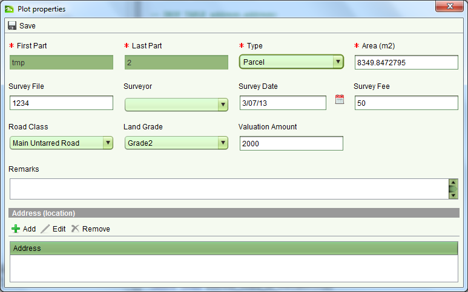
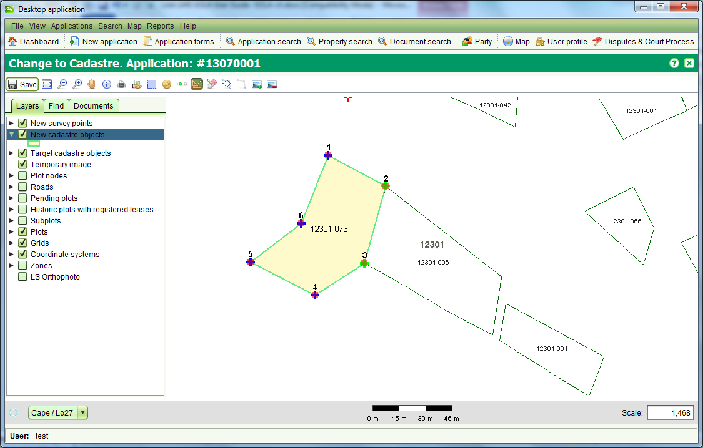
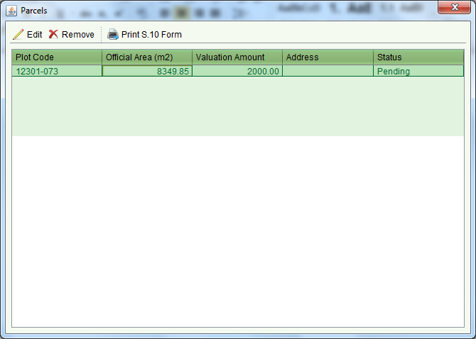
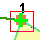
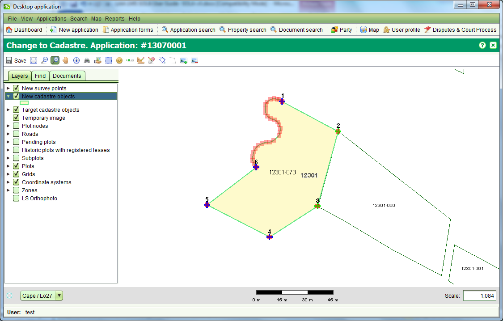
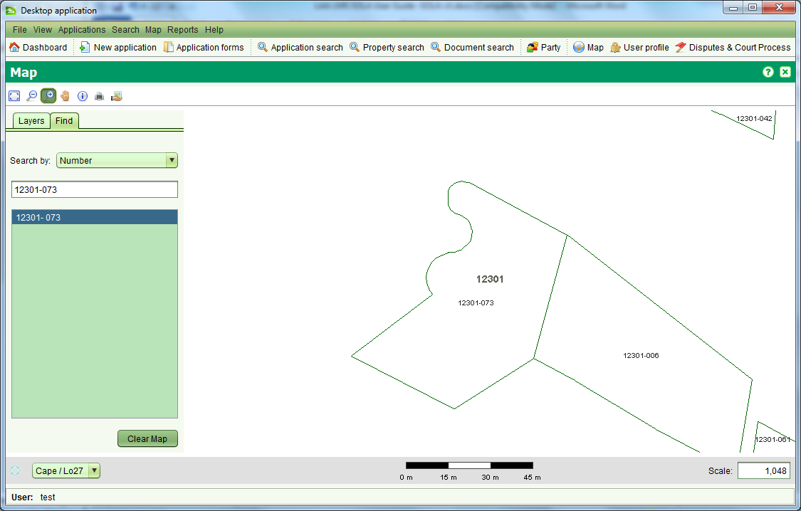
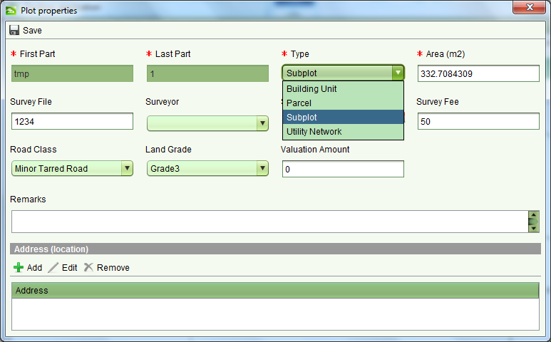
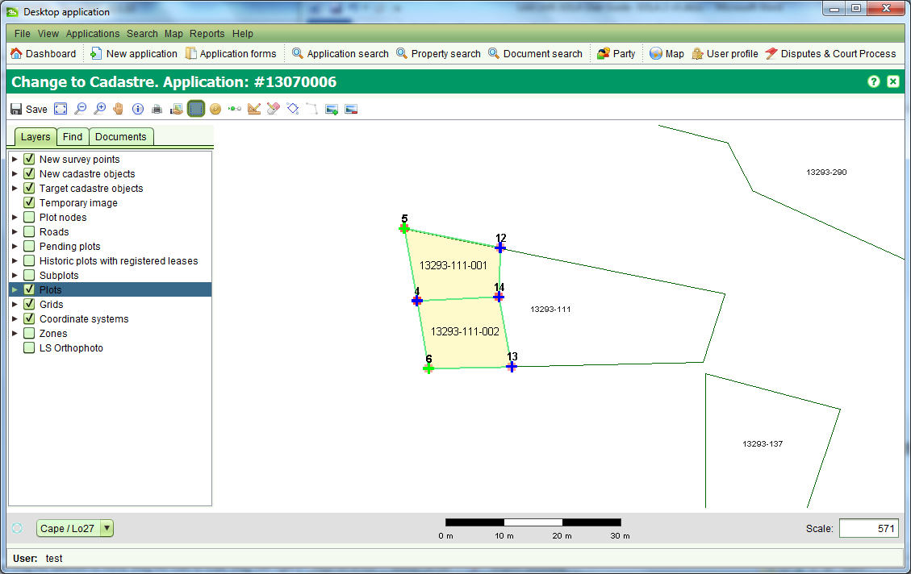

The Change to Cadastre screen allows you to create new plots and subplots for
lease purposes. The details for new plots can be obtained from a survey plan
either by heads up digitizing from an image of the plan or by entering the
coordinates for survey points. The Change to Cadastre screen can be accessed by
 starting the Change to Cadastre service from the Application Details Service tab.
starting the Change to Cadastre service from the Application Details Service tab.
The Change to Cadastre screen extends the SOLA Map Viewer with additional tools to aid spatial editing of plots. The additional tools provided are:
Before capturing new plot details you must determine the coordinate system to use (either Lo27 or Lo29) and set it on the Map. This will ensure all data captured will be stored using the coordinate system you have chosen. Be aware that you may need to set the coordinate system every time you open the Map to capture new plot information.
Target plots are used to indicate the underlying plots that are being subdivided or amalgamated by a survey plan. Most survey plans in Lesotho identify new areas of land that have not previously been surveyed, so it will usually not be necessary to select target plots.
In cases where the survey plan does indicate that one or more underlying plots
are being subdivided or amalgamated, first locate the underlying plots on the
map using the map search or the map navigation tools. Once located, use the
Select / Deselect Target Plot tool
 to select (or deselect) plots as required. Target plots will display with a
dark blue border and light yellow fill.
to select (or deselect) plots as required. Target plots will display with a
dark blue border and light yellow fill.
Target plots may also be used to assist with snapping a survey point for a
new plot to the node of an adjacent plot. To do this, use the Select / Deselect
Target Plot tool
 to select the existing plot that will share a boundary node with the new plot.
Add the new survey point to the map and snap it to the appropriate node on
the target plot. Once you have completed snapping the new survey points to
the existing plot nodes, you must deselect the target plots.
to select the existing plot that will share a boundary node with the new plot.
Add the new survey point to the map and snap it to the appropriate node on
the target plot. Once you have completed snapping the new survey points to
the existing plot nodes, you must deselect the target plots.
WARNING: Failing to deselect a target plot after you have completed snapping of the new survey points will cause the target plot to be removed from the map when the application is approved.
Survey points represent coordinates recorded on a survey plan. They can be located
directly on the map via a single click with the Create / Link Survey Points tool
 loaded from a survey data file or the coordinates can be manually entered using
the Survey Points screen which can be accessed using the Survey Points tool
loaded from a survey data file or the coordinates can be manually entered using
the Survey Points screen which can be accessed using the Survey Points tool

By default, new survey points are created as boundary points. You can change a survey point to a traverse point by clearing the Is boundary checkbox. Traverse points are displayed on the map as red triangles.
You can also link a boundary point to the node of a target plot using the
Create / Link Survey Points tool
 Simply select the new boundary point and drag it close to the target plot node.
The new boundary point will snap to the location of the target plot node and
the blue cross will change to a green cross to confirm the linkage. The Survey
Points screen also indicates when the boundary point is linked. To unlink the
boundary point, clear the Is linked check box.
Simply select the new boundary point and drag it close to the target plot node.
The new boundary point will snap to the location of the target plot node and
the blue cross will change to a green cross to confirm the linkage. The Survey
Points screen also indicates when the boundary point is linked. To unlink the
boundary point, clear the Is linked check box.
If you need to delete a survey point that has been added in error, select the point from the list and click the Remove button.
Coordinate data can also be loaded from a Comma Separated Values (CSV) text file. Loading a CSV coordinate file requires attaching a .csv file as a document to the application and using the Add Points button on the Documents tab of Change to Cadastre to import the data. For details on the file format and the steps required to import a survey data file see Import a Survey Data File.
To assist capturing the location of survey points from the plan, you can load an image of the survey plan onto the Map Viewer and use the mouse to capture the location of the new survey points.
To add a plan image to the map you must first have an image file available on your local hard drive. The file formats supported by the Map Viewer are TIFF, PNG and JPEG. If you have an image in a different format (e.g. PDF), then you will need to convert the file to one of the accepted image formats before it can be displayed in the Map Viewer.
The Add Image tool
 works by matching two points you select on the map with two points you select
from the image. For the best match accuracy, the first node you select should
be at the bottom left of the plan image and the second point at the top
right (or top left and bottom right). The image is then scaled and displayed
in the Map Viewer accordingly.
works by matching two points you select on the map with two points you select
from the image. For the best match accuracy, the first node you select should
be at the bottom left of the plan image and the second point at the top
right (or top left and bottom right). The image is then scaled and displayed
in the Map Viewer accordingly.
Note that the current Add image tool does not rotate the image and requires the plan to have a standard North orientation. If the plan does not have a standard North orientation, use an appropriate imaging software package (e.g. Microsoft Office Picture Manager) to rotate the plan image so that North for the plan is the top of the computer screen before adding the image to the map.
You can create new plots using the Create New Plot tool . Using the tool,
single click each survey point of the new plot in sequence in either a
clockwise or anti-clockwise direction and double click on the final survey
point to close the plot boundary. You will then be prompted with the Plot
properties dialog.

Enter the appropriate details for the new plot. The most important
information is the Type. In most cases this should be set to Parcel which
will indicate the record is a new plot. Save the details when you have
finished entering them and the map will redraw showing the new plot with
a green border and yellow fill.
If you make a mistake while forming the new parcel, right click to cancel the shape and start again.
Plots are assigned a sequential number based on the grid in which they are
located. You will note in the previous screen shot that the new plot is
temporarily assigned the number tmp-2. SOLA will automatically assign the
appropriate number for the new plot (or subplot) when you
 Save the Change to Cadastre.
Save the Change to Cadastre.

If you need to further update the details for the new plot, use the Plot List tool
 to open the Plot List screen. From here you can select the plot and
to open the Plot List screen. From here you can select the plot and
 its details as required using the Plot properties dialog. Once you have completed
your updates in the Plot properties dialog,
its details as required using the Plot properties dialog. Once you have completed
your updates in the Plot properties dialog,
 Save and Close to redisplay the Plot List screen or
Save and Close to redisplay the Plot List screen or
 Cancel if you choose not to save your changes.
Cancel if you choose not to save your changes.
If you decide to remove the new plot, select it in the Plot List screen and choose
 Remove You can also print an S-10 Survey Approval form by choosing
Remove You can also print an S-10 Survey Approval form by choosing
 Print S.10 Form on the Plot List screen.
Print S.10 Form on the Plot List screen.

The Create New Plot tool allows you to create new plots with simple right-line
boundaries where the start and end point for each boundary line must be
a survey point. If the plot requires an irregular boundary (a.k.a. natural
boundary) then you need to use the Boundary Change tools to modify the
right line boundary line of a new plot.
 prior to using the Boundary Change tools. The exception to this rule is where
the irregular boundary will form the shoreline of a lake or the sea.
In this case it is unlikely there will be an adjacent parcel to update.
prior to using the Boundary Change tools. The exception to this rule is where
the irregular boundary will form the shoreline of a lake or the sea.
In this case it is unlikely there will be an adjacent parcel to update.
The Select Boundary tool
 can be used to identify the boundary line(s) of a new plot that must be
changed into an irregular boundary. Use the tool to select the start and
end points of the irregular boundary by dragging a small selection box
around the appropriate new parcel node when prompted to do so by the tool.
can be used to identify the boundary line(s) of a new plot that must be
changed into an irregular boundary. Use the tool to select the start and
end points of the irregular boundary by dragging a small selection box
around the appropriate new parcel node when prompted to do so by the tool.

The order that you select the start and end points for the new irregular
boundary is important. The tool will highlight all plot boundary line(s)
in a clockwise direction from the start point to the end point. The highlighted
boundary lines indicate the boundary lines that will be replaced by the new
irregular boundary. If the wrong sequence of boundary lines is highlighted,
repeat the selection ensuring the end point is selected as the start point
and vice versa.
Selecting a boundary to change will enable the Change Boundary tool
 Use this tool to reshape the parcel boundary using the mouse.
Use this tool to reshape the parcel boundary using the mouse.

If the new boundary covers a large area, it can be difficult using the
Change Boundary tool
 to create the new boundary in one go. In this situation, create an initial
boundary that approximately represents the new boundary you require. You
can then zoom in and use the Boundary Change tools to improve segments of
the initial boundary as required.
to create the new boundary in one go. In this situation, create an initial
boundary that approximately represents the new boundary you require. You
can then zoom in and use the Boundary Change tools to improve segments of
the initial boundary as required.
Changes made to the cadastre remain pending until the application containing
the Change to Cadastre service is approved. You can approve the application
by completing all services on the application and approving the application
using the Approve tool.
 in the Application action dropdown. The new plots will then show as current
parcels in the SOLA Map Viewer.
in the Application action dropdown. The new plots will then show as current
parcels in the SOLA Map Viewer.
To print an S.10 Survey Approval Form for the new plot, use the Plot List tool
 to open the Plot List screen and print the S.10 form from there. This can be
done before the application is approved.
to open the Plot List screen and print the S.10 form from there. This can be
done before the application is approved.

You can create a subplot to define the area of a sublease in much the same
way as creating a plot. The main difference is to select Subplot instead
of Parcel as the Type on the Plot properties dialog.

Subplots must be within the boundary of their parent plot. This may require
selecting the parent plot as a Target Plot temporarily so that node linking
can be performed. This will help to avoid the subplot from extending beyond
the boundary of the parent plot.
WARNING: Be sure to deselect the Target Plot before completing the Cadastre Change service otherwise the parent plot will be removed from the map when the application is approved.
A plot can have more than one subplot, as long as the subplots do not
overlap. As with plots, the number for a subplot is automatically assigned
when the Cadastre Change is saved. You can also create irregular boundaries
for subplots in the same way as for plots.

Once the application is approved, the new subplots will display in the Subplots
layer of the Map.
Also See